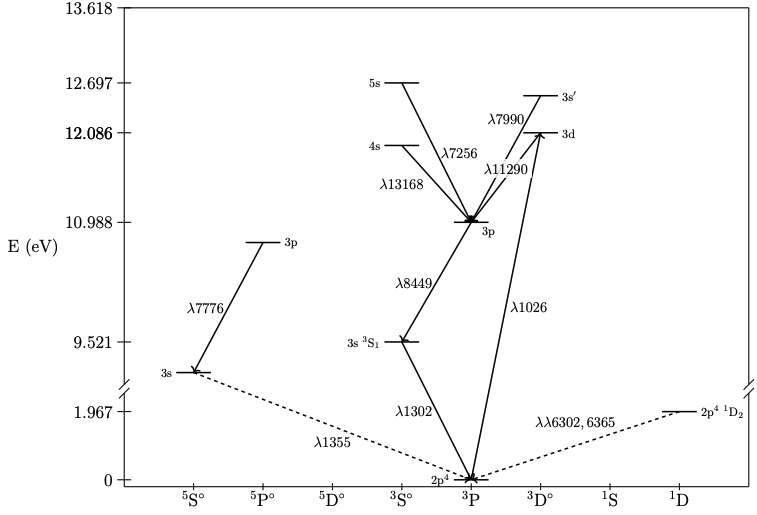
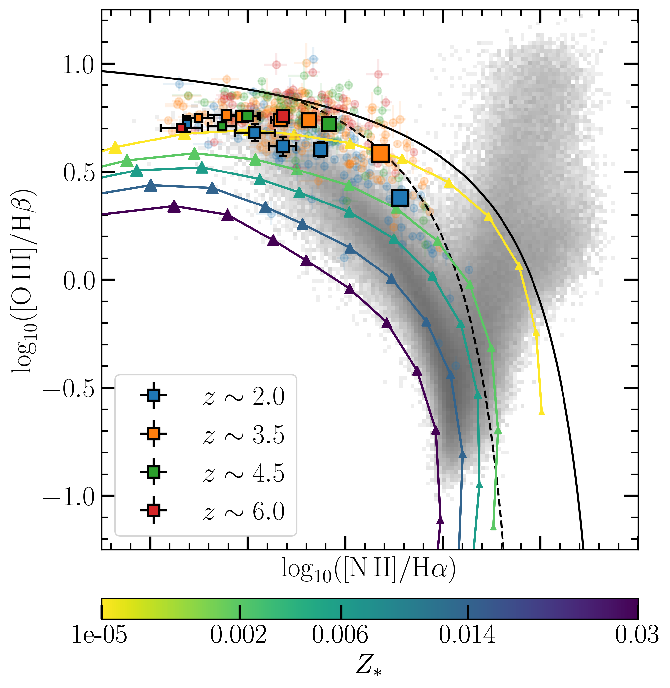
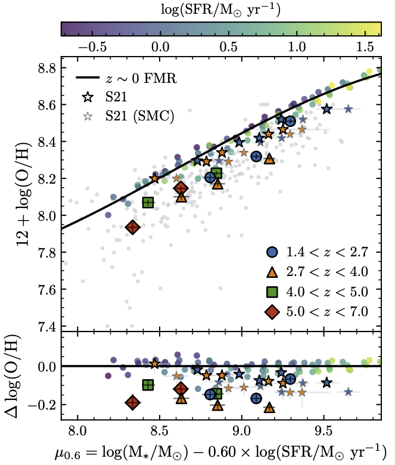
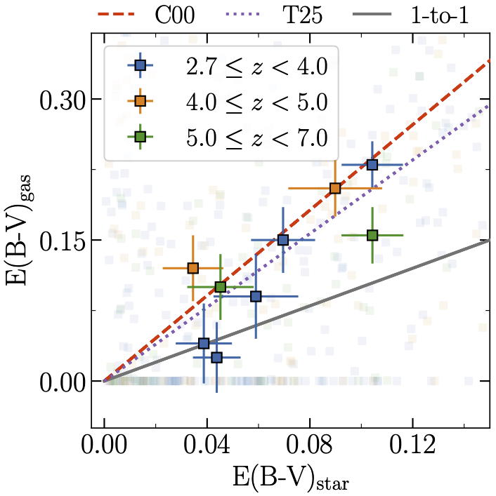
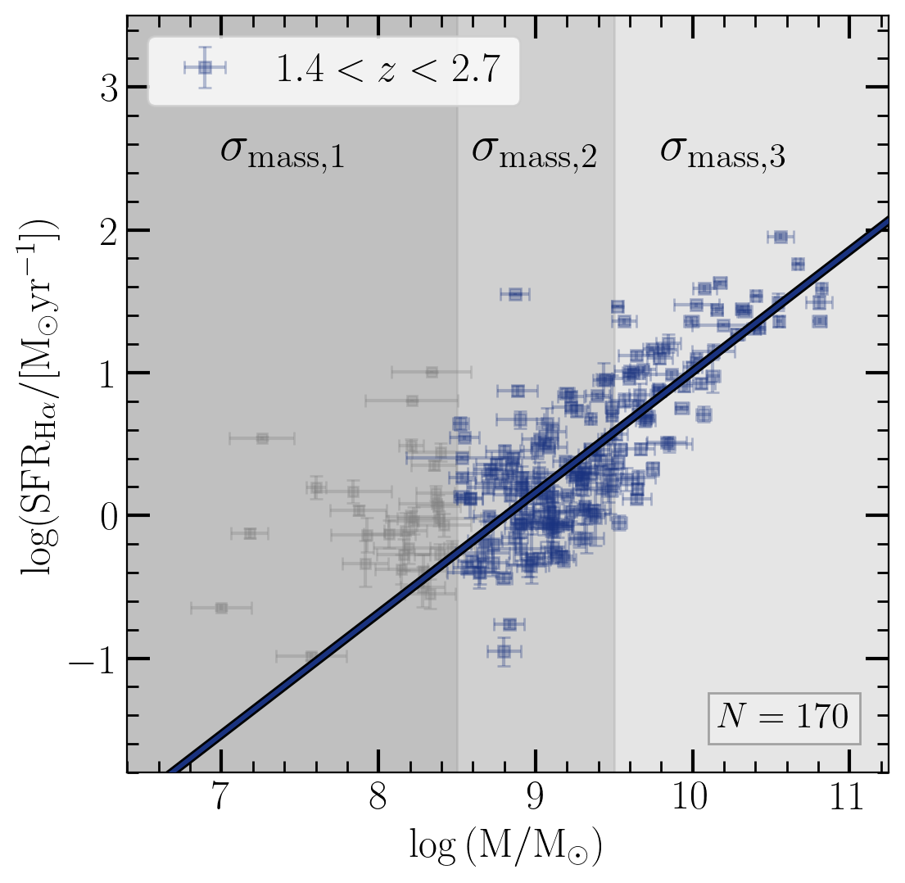
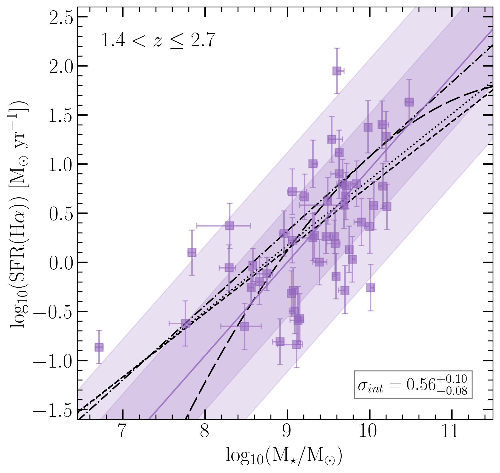
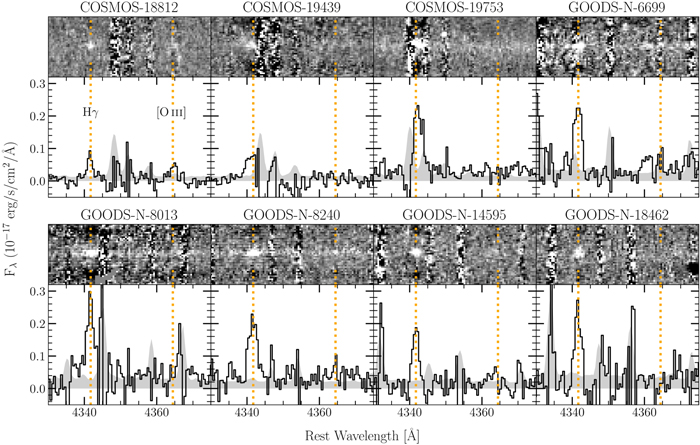

My main areas of interest are in observational galaxy formation and evolution. My research focuses on using spectroscopic observations
of $z>1$ galaxies to better understand star formation and conditions in the ISM in the early Universe.
I am currently going into my 6th year of the PhD program and am on the market for postdoc jobs in the 2026-2027 application cycle!
The central questions that drive my research are the following: How do the conditions in the ISM of galaxies evolve with cosmic time? How do galaxies grow and assemble their stellar mass? Spectroscopy is a powerful tool that probes the physics of the ISM and allows us to answer these fundamental questions. Especially with the advent of JWST, our ability to probe the rest-optical features of galaxies in the distant Universe has vastly increased, enabling studies of star formation, metallicities, dust, and chemical abundance patterns across populations in the early Universe. My work aims to help characterize the growth and establish the properties of typical star-forming galaxies at high redshift.
I collaborate with several research groups and survey teams, including AURORA (PI: Shapley, Co-PI: Sanders), OutThere (PI: Glazebrook), NEXUS (PI: Zhuang), and OMEGA (PI: Roberts-Borsani). I have also served as organizer and co-organizer for the 2024, 2025, and 2026 editions of the Sierra Conference, a graduate student conference sponsored by UC Observatories that brings together astrophysics graduate students across the UC system to network while camping!






